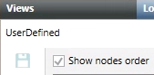

Sorting Sibling Nodes in a System Browser View
By default, in System Browser views, alphanumeric sorting applies to nodes. Consequently, the nodes sorting varies depending on:
- Information display (Name or Description).
- Different languages. For example, nodes having a logical connection might be next to each other in a language while they appear separated into another one.
- The creation of new nodes. This will change the position of the existing ones even if this was not intended.
You can sort sibling nodes in different ways.
Prerequisites
- System Manager is in Engineering mode.
Assign a Fixed Position to a Node in a Subtree by Sticking it to a Specific Position Under its Parent Node
Desigo CC allows arranging nodes to have fixed positions independent of the different languages, information display, or the creation of new nodes that affects the position of the existing ones.
- In System Browser, select the view you want to update from the drop-down list.
- Select the root node of the view, that is, the top item of the tree structure.
- In the Views tab, expand the view structure, and in the desired subtree, select the child node that you want to pin.
- Click Pinned Node.
- The Pinned Node dialog box displays.
- In the New position field, set a value corresponding to the new position for the child node in its subtree.
NOTE: The bigger the value, the lower is the position in the subtree. You cannot set negative numbers. - Click OK.
- Click Save
 .
. - (Optional) To view the values of the resulting order, on the top left, select the Show nodes order check box.

- The child node is pinned to the defined position, in the Views tab preview and in the relevant System Browser view. Pinned nodes in a subtree are ordered following the node position values: from the smallest to the biggest. This order will not change after import/re-import operations. If you selected the Show nodes order check box, the values of the resulting order display in the view structure next to the nodes names.
Change the Nodes Position in a Subtree
- In System Browser, select the view you want to update from the drop-down list.
- Select the root node of the view, that is, the top item of the tree structure.
- In the Views tab, expand the view structure, and select all the nodes that you want to move.
- Click Move top, Move up, Move down, or Move bottom to change their position.
- Click Save .
- The nodes display in the new position, in the Views tab preview and in the relevant System Browser view. If you selected the Show nodes order check box on the top left, the values of the order update accordingly.
Restore the Child Nodes Default Sort Order
- In System Browser, select the view you want to update from the drop-down list.
- Select the root node of the view, that is, the top item of the tree structure.
- In the Views tab, expand the view structure, and select the parent node of the subtree whose sort order you want to reset.
- Click Reset children order.
- Click Save .
- The default order (alphabetical) is restored. If the Show nodes order check box on the top left was selected, the sort order values are reset to 0.
NOTE: The reset operation applies only to the first level. It does not propagate to deeper levels.